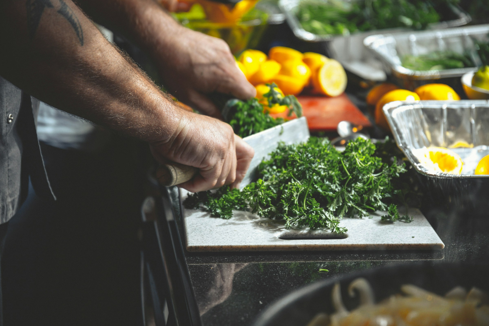

El Sabor que nos Une
Inspírate con preparaciones memorables, organiza tu despensa y descubre recetas oficiales con la calidad y tradición de nuestras marcas familiares.

Inspírate con preparaciones memorables, organiza tu despensa y descubre recetas oficiales con la calidad y tradición de nuestras marcas familiares.